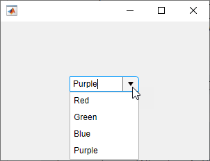
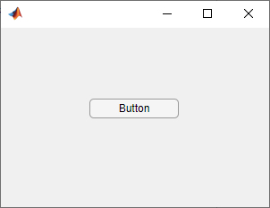
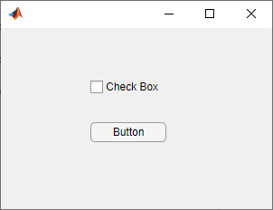
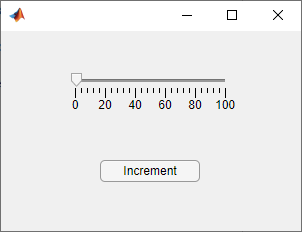
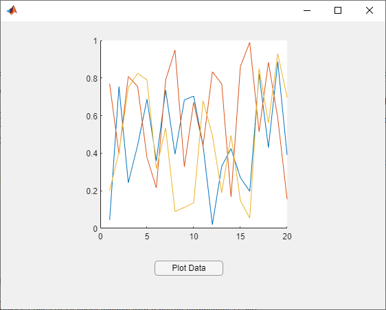

Create Callbacks for Apps Created Programmatically
To program a UI component in your app to respond to an app user's input, create a callback function for that UI component. A callback function is a function that executes in response to a user interaction, such as a click on a button. Every UI component has multiple callback properties, each of which corresponds to a specific action. When a user runs your app and performs one of these actions, MATLAB® executes the function assigned to the associated callback property.
For example, if your app contains a button, you might want to make the app update when a
user clicks that button. You can do this by writing a function that performs the update, then
setting the ButtonPushedFcn property of the button to a handle to your
function. You can assign a callback function to a callback property as a name-value argument
when you create the component, or you can set the property using dot notation from anywhere in
your code.
To determine the callback properties a UI component has, see the properties page of the specific UI component.
Callback Function Arguments
When a UI component executes a callback function, MATLAB automatically passes two input arguments to the function. These input
arguments are often named src and event. The first
argument is the UI component that triggered the callback. The second argument provides event
data to the callback function. The event data that it provides is specific to the callback
property and the component type. To determine the event data associated with a callback
property, see the properties page of the UI component that executes the callback.
For example, the updateDropDown function uses these callback inputs
to add items to an editable drop-down menu when the user types a new value. When the
drop-down executes the addItems callback, src contains
the drop-down component, and event contains information about the
interaction. The function uses the event.Edited property to check if the
value is a new value that the user typed, or an existing item. Then, if the value is new,
the function uses the event.Value property to add the value to the
drop-down items.
To run this function, save it to a file named updateDropDown.m on the
MATLAB path. Type a new value in the drop-down menu, press Enter,
and view the updated drop-down items.
function updateDropDown fig = uifigure('Position',[500 500 300 200]); dd = uidropdown(fig, ... 'Editable','on', ... 'Items',{'Red','Green','Blue'}, ... 'ValueChangedFcn',@addItems); end function addItems(src,event) val = event.Value; if event.Edited src.Items{end+1} = val; end end

Specify a Callback Function
Assign a callback function to a callback property in one of the following ways:
Specify a Function Handle — Use this method when your callback does not require additional input arguments.
Specify a Cell Array — Use this method when your callback requires additional input arguments. The cell array contains a function handle as the first element, followed by any input arguments you want to use in the function.
Specify an Anonymous Function — Use this method when your callback code is simple, or to reuse a function that is not always executed as a callback.
Specify a Function Handle
Function handles provide a way to represent a function as a variable. The function can
be either a local or nested function in the same file as the app code, or a function
defined in a separate file that is on the MATLAB path. To create the function handle, specify the @
operator before the name of the function.
For example, to create a button that responds to a click, save the following function
to a file named codeButtonResponse.m on the MATLAB path. This code creates a button using the uibutton function and sets the ButtonPushedFcn property
to be a handle to the function buttonCallback. It creates this handle
using the notation @buttonCallback. Notice that the function handle
does not explicitly refer to any input arguments, but the function declaration includes
the src and event input arguments.
function codeButtonResponse fig = uifigure('Position',[500 500 300 200]); btn = uibutton(fig,'ButtonPushedFcn',@buttonCallback); function buttonCallback(src,event) disp('Button pressed'); end end

A benefit of specifying callbacks as function handles is that MATLAB checks each callback function for syntax errors and missing dependencies when you assign it to the component. If there is a problem in a callback function, then MATLAB returns an error immediately instead of waiting for the user to trigger the callback. This behavior helps you to find problems in your code before the user encounters them.
Specify a Cell Array
All callbacks accept two input arguments for the source and event. To specify a callback that accepts additional input arguments beyond these two, use a cell array. The first element in the cell array is a function handle. The other elements in the cell array are the additional input arguments you want to use, separated by commas. The function you specify must accept the source and event arguments as its first two input arguments, as described in Specify a Function Handle. However, you can define additional inputs in your function declaration after these first two arguments.
For example, the codeComponentResponse function creates a button
and a check box component that both use the same function as a callback, but that pass
different arguments to it. To specify different input arguments for the different
components, set the callback properties of both components to cell arrays. The first
element of the cell array is a handle to the componentCallback
function, and the second is the additional input argument to pass to the function.
To run this example, save the function to a file named
codeComponentResponse.m on the MATLAB path. When you select or clear the check box, MATLAB displays You clicked the check box. When you click the
button, MATLAB displays You clicked the button.
function codeComponentResponse fig = uifigure('Position',[500 500 300 200]); cbx = uicheckbox(fig,'Position',[100 125 84 22], ... 'ValueChangedFcn',{@componentCallback,'check box'}); btn = uibutton(fig,'Position',[100 75 84 22], ... 'ButtonPushedFcn',{@componentCallback,'button'}); function componentCallback(src,event,comp) disp(['You clicked the ' comp]); end end

Like callbacks specified as function handles, MATLAB checks callbacks specified as cell arrays for syntax errors and missing dependencies when you assign them to a component. If there is a problem in the callback function, then MATLAB returns an error immediately instead of waiting for the user to trigger the callback. This behavior helps you to find problems in your code before the user encounters them.
Specify an Anonymous Function
An anonymous function is a function that is not stored in a program file. Specify an anonymous function when:
You want a UI component to execute a function that does not support the two source and event arguments that are required for function handles and cell arrays.
You want a UI component to execute a script.
Your callback consists of a single executable statement.
To specify an anonymous function, create a function handle with the two required source and event input arguments that executes your callback function, script, or statement.
For example, the changeSlider function creates a slider UI
component and a button to increment the slider value. The
incrementSlider function does not have the source and event input
arguments, since it is designed to be callable either inside or outside of a callback. To
execute incrementSlider when the button is pressed, create an
anonymous function that accepts the src and event
input arguments, ignores them, and executes incrementSlider.
To run the changeSlider function, save the code below to a file
named changeSlider.m on the MATLAB path.
function changeSlider fig = uifigure('Position',[500 500 300 200]); s = uislider(fig,'Position',[75 150 150 3]); incrementSlider; b = uibutton(fig,'Position',[100 50 100 22], ... 'Text','Increment', ... 'ButtonPushedFcn',@(src,event)incrementSlider); function incrementSlider if s.Value < s.Limits(2) s.Value = s.Value + 1; end end end

When your callback is a single executable statement, you can specify the callback as
an anonymous function to avoid needing to define a separate function for the statement.
For example, the following code creates a button that displays Button
pressed when the button is clicked by specifying a callback as an anonymous
function.
fig = uifigure('Position',[500 500 300 200]); btn = uibutton(fig,'ButtonPushedFcn',@(src,event)disp('Button pressed'));
Unlike with callbacks specified as function handles or cell arrays, MATLAB does not check callbacks specified as anonymous functions for syntax errors and missing dependencies when you assign them to a component. If there is a problem with the anonymous function, it remains undetected until the user triggers the callback.
Specify Text Containing MATLAB Commands (Not Recommended)
You can specify a callback as a character vector or a string scalar when you want to execute a few simple commands, but the callback can become difficult to manage if it contains more than a few commands. Unlike with callbacks that are specified as function handles or cell arrays, MATLAB does not check character vectors or strings for syntax errors or missing dependencies. If there is a problem with the MATLAB expression, it remains undetected until the user triggers the callback. The character vector or string you specify must consist of valid MATLAB expressions, which can include arguments to functions.
For example, the code below creates a UIAxes object and a button
that plots random data on the axes when it is clicked. Notice that the character vector
'plot(ax,rand(20,3))' contains a variable, ax The
variable ax must exist in the base workspace when the user triggers the
callback, or MATLAB returns an error. The variable does not need to exist at the time you assign
callback property value, but it must exist when the user triggers the callback.
Run the code, then click the button. Since ax exists in your base
workspace, the callback command is valid, and MATLAB plots the data.
fig = uifigure; ax = uiaxes(fig,'Position',[125 100 300 300]); b = uibutton(fig,'Position',[225 50 100 22], ... 'Text','Plot Data', ... 'ButtonPushedFcn','plot(ax,rand(20,3))');
